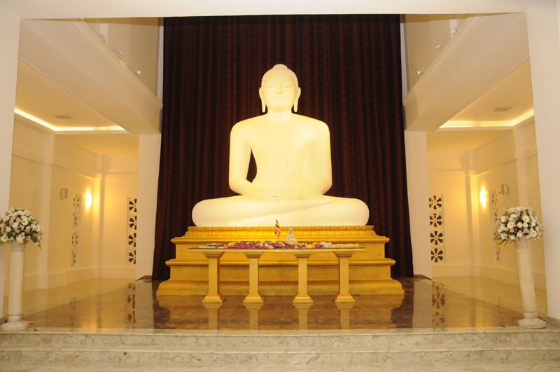

About Us
It was the early 80’s. A time when the term “ICT” was something new to Sri Lankan mind. A group of courageous Anandians stepped up together and formed the “Ananda College Computer Society”. With the advent of time, this society became a pioneer in the school computing arena.
Recent History
It was the early 80’s. A time when the term “ICT” was something new to Sri Lankan mind. A group of courageous Anandians stepped up together and formed the “Ananda College Computer Society”. With the advent of time, this society became a pioneer in the school computing arena. Time Passed. By the start of the 21st century, the society was nearly abandoned until a group of skillful Anandians with determination took the initiative on reviving the society back to its glory days.
Like a Phoenix border-top-right-radiussing from the ashes, the society was reborn as the Ananda College Information and Communication Technology Society. Completely rejuvenated; the society started its journey to accomplish the goal of revolutionizing the school-based ICT of Sri Lanka.
Quisque suscipit mollis bibendum. Nulla facilisi.
Hosting mammoth events such as “Pulz” in 2006, 2007, 2010 and 2011, Creating and Managing one of the best school websites and keeping it up-to-date are some of the many accomplishments of ACICTS. By being the pioneer of the ICT related activities throughout the school, and providing technical and other assistance to almost all the events held by the school. ACICTS has become a well-known society inside Ananda College. And taking a step beyond contemporary school based ICT societies’, ACICTS has also been providing IT requirements for events and for the projects done outside the school as well.
The Legacy of ACICTS
Through hard work and commitment ACICTS has become the most renowned ICT society in the country by gaining consecutive victories and titles in all the fields of ICT in both the Local and Global Arena. The Society has also given birth to some of the most renowned graphic designers, programmers, web developers, who dominate the ICT field of the country at the moment. The Annual ICT event, organized by ACICTS is not only the most anticipated school-based ICT event, it has become one of the most iconic events belonging the whole ICT arena in Sri Lanka. Each year ACICTS evolves Pulz in a colossal magnitude, breaking the standards of the last year. SNICT is also one of the massive ideas initiated and implemented by ACICTS.

Quisque suscipit mollis bibendum. Nulla facilisi.
This is the premier school-based ICT community of the country. Joining hands with IT societies throughout the country, working in harmony towards lessening the digital divide. Today, we are proud to say that ACICTS has achieved a status in the ICT field and we are Unrivaled, Unparalleled and Unmatched by any ICT society in the Island, and our goal is to bring Pride and glory to our Alma Mater through the Cyberspace and the Digital World.